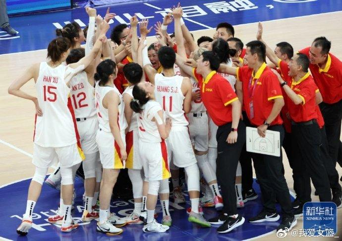
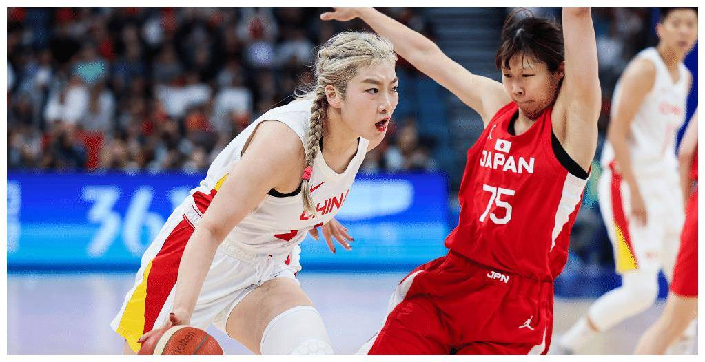
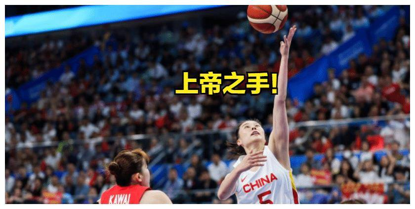

10月5日晚,中国女篮与日本女篮在杭州亚运会女篮决赛中进行了一场激烈的比赛。相信大家都看过这场比赛。 最终,中国女篮凭借王思雨的强力上篮以74-72击败日本女篮,成功卫冕亚运会冠军。
整场比赛，中国女篮和日本女篮一直保持着密不可分的关系。日本女篮在比赛初期就展现出了非常高的攻击力，
一度超过了中国女篮。不过，中国女篮并没有放弃，整场比赛逐渐找回状态，继续缩小比分差距。
比赛最后时刻，双方气氛异常紧张,最终打成平局。这时,王思雨站了起来。比赛还剩不到10秒时,他接到队友传球，尝试强
力上篮。这个进球不仅帮助中国女篮反超比分，也给日本女篮带来了巨大的心理压力。最终,中国女篮凭借王思雨的制胜进
球以74-72战胜日本女篮 ，成功卫冕亚运会冠军。本场比赛的胜利与中国女篮全体队员的共同努力密不可分。
整场比赛他们表现出了顽强的决心和不屈不挠的精神，不断追逐比分。同时，她们也展现了自己的技术能力，通过配合和快
速进攻不断对日本女篮构成威胁。比赛最后时刻王诗雨的制胜一球，清楚地展现了中国女篮的实力和决心。总之，中国女篮
在杭州亚运会上的表现令人印象深刻。他们凭借顽强的斗志和顽强的精神，成功卫冕了亚运会冠军。相信未来，中国女篮将
继续保持优异的成绩，为中国篮球的发展做出更大的贡献。
点击查看最后决胜时刻回放
